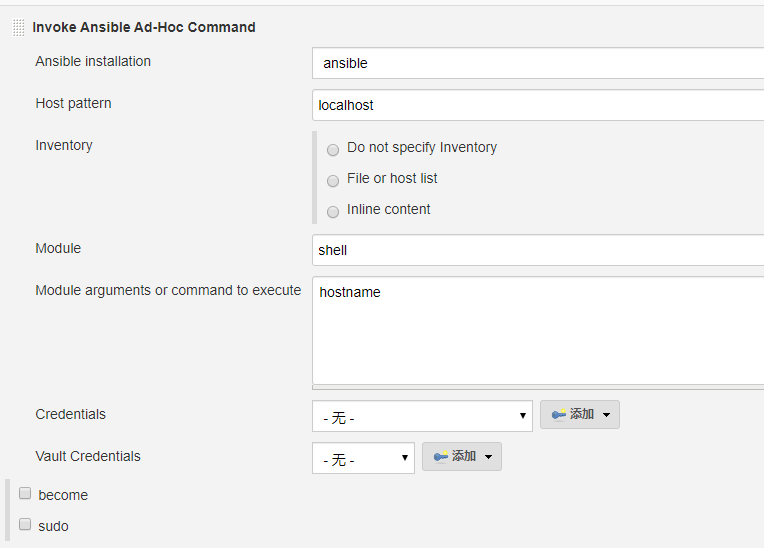
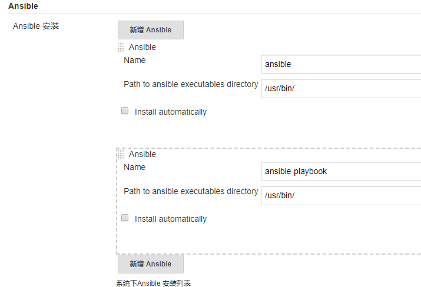
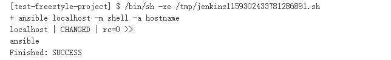
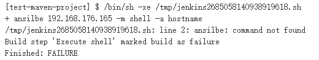
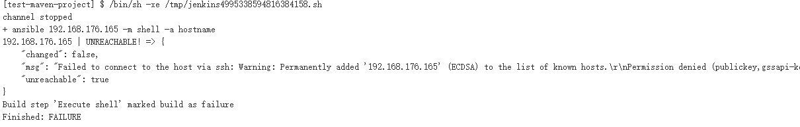
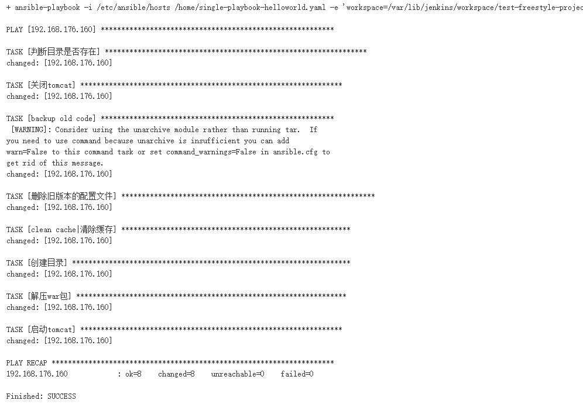
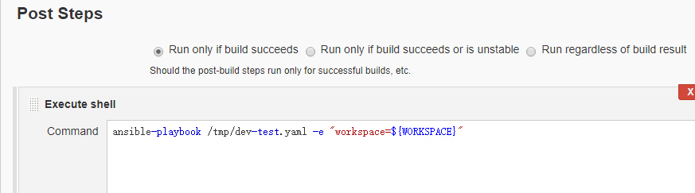
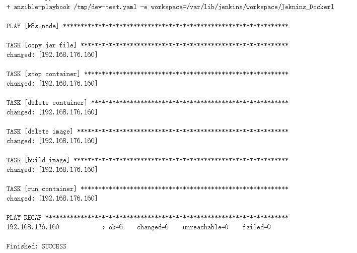

- 01.Jenkins的安装配置与日常维护.md.html
- 02.Jenkins强大的插件功能.md.html
- 03.Devops工具链.md.html
- 04.初探Jenkins CD实践.md.html
- 05.Jenkins常用项目配置参数.md.html
- 06.Jenkins部署之Docker要点.md.html
- 07.Jenkins集成之Ansible要点.md.html
- 08.Jenkins集成Ansible持续部署服务到Docker容器.md.html
- 09.实现自动化引擎之Jenkins Pipeline声明式语法.md.html
- 10.实现自动化引擎之Jenkins Pipeline脚本式语法.md.html
- 11.Pipeline语法进行持续交付与基础实践.md.html
- 12.Jenkins Docker Pipeline插件动态生成Slave节点语法剖析.md.html
- 13.使用 Docker Pipeline插件动态生成Jenkins Slave 实践.md.html
- 14.搞定不同环境下的Jenkins与Kubernetes集群连接配置.md.html
- 15.Jenkins Kubernetes Plugin介绍与语法详解.md.html
- 16.使用Kubernetes编排Jenkins Slave节点持续交付项目.md.html
- 17.使用Kubernetes插件持续部署服务到Kubernetes集群.md.html
- 18.Ansible Plugin插件语法详解与持续部署服务到kubernetes集群.md.html
- 捐赠
08.Jenkins集成Ansible持续部署服务到Docker容器
在前面的jenkins基础实践章节中简单介绍了使用jenkins内置插件实现应用代码的发布，通过上一节Ansible基础知识的介绍，本节来使用Ansible对jenkins基础实践章节的内容继续进行一下重构和提优化。
使用与配置
在前面的章节中已经对ansible做过基础的介绍，这里不多说，首先看一下Jenkins与Ansible的集成如何使用。
Jenkins与Ansible的集成使用主要有三种方式：
- 一种是在步骤中通过在”Exec shell“中直接输入Ansible命令来进行工作；
- 一种就是使用Jenkins中安装的Ansible插件来工作；
- 然后就是在pipeline中使用ansible插件，本章节暂时不涉及此内容；
下面分别介绍一下前两种的使用方法，以一个freestyle类型的job为例。
使用Exec shell
使用”Exec shell“，在输入框中输入：
ansible localhost -m shell -a "hostname"
说明：
该命令用来在本机执行hostname命令。- localhost是ansible内置的一个组，表示ansible本机。
除了可以使用ansible Ad-hoc命令意外，还可以使用ansible-playbook命令执行playbook，有兴趣的可以自己尝试一下。
使用ansible插件
在”构建“步骤中，点击”Invoke Anisble Ad-hoc command“，配置如下：

其中：
Ansible installation 用来选择ansible的命令，此处的命令获取方式为一个下拉列表，该列表的值是从Jenkins的全局工具中配置ansible相关命令的环境变量获取到的，在前面的章节中我们已经做过此操作，如果没有的话，需要重新添加ansible的环境变量，比如我这里在Jenkins中配置的ansible命令的环境变量如下：

Host pattern：用来填写要操作的主机列表，可以是一个主机ip也可以是一个主机组名称。无论是那种，都要确保该主机ip或者主机组名在ansible的主机清单（inventory）文件中存在，localhost和all除外，这两个是ansible内置的组；
Inventory：主机清单列表，此处可以自己定义，是使用文件还是手动输入，默认使用的文件为/etc/ansible/hosts；
module：此处为要使用的ansible的模块名称（在ansible命令中通过-m参数指定的值），ansible实现主机批量管理是通过模块实现的，如果不填写默认为command模块；
Playbook path：只有使用Invoke Ansible Playbook选项参数才会有此参数配置，用来执行要执行的plyabook文件；
Module arguments or command to execute：这里需要指定在目标主机上执行的命令，也就是ansible命令中-a参数指定的值；
Credentials：用来指定ansible连接目标主机时对目标服务器认证的凭据，如果在ansible主机清单文件中配置了可以不填写；
Vault Credentials：加密后的凭据，只支持file和text类型的加密凭据；
become：在目标主机执行命令的用户，仅支持目标主机上的用户为sudo用户，并且没有password；
sudo : 提升用户权限为root；
除了可以使用Ad-hoc命令外，还以可以使用ansible-playbook命令ansible-valut命令，分别对应的参数选项为Invoke Ansible Playbook(用于执行playbook脚本)和Invoke Ansible vault(用来对playbook内容加密处理)。
配置保存后执行job，执行结果如下：

在实际工作中，通过jenkins与ansible集成，使用ansible ad-hoc命令的情况还是比较少见的，大多数都是通过去执行playbook来进行代码发布和部署工作。
遇到的问题
无论是使用ansible ad-hoc命令还是使用ansib-playbook命令，如果执行job后报如下错误（找不到ansible命令）。

或者（连接不上远程主机）。

导致以上报错的出现的原因有两种，一种是真正意义上的命令找不到（或者到主机网络不可达，主机认证失败）；另一种就是Jenkins用户权限问题导致的，这里简单说明一下：第一种情况可能不多见，因为安装好ansible后，默认就配好了ansible的全局环境变量；至于主机不可达与主机认证，相信大家都会测试，在服务器终端执行一下命令就知道了，这里不多说，主要说一下Jenkins的权限问题。
jenkins安装后，在执行job任务的时候默认使用jenkins用户进行，而jenkins用户对ansible，以及使用root的ssh-key连接远程服务器默认是没有权限的。所以要确保用户jenkins对这些命令和文件具有执行权限。这里给出两种解决此问题的方法。
方法一
修改Jenkins配置文件。
$ vim /etc/sysconfig/jenkins
#修改JENKINS_USER，并去掉当前行注释
JENKINS_USER="root"
修改Jenkins相关文件夹用户权限（根据实际情况做修改，也可以略过此步骤）。
chown -R root:root /var/lib/jenkins
chown -R root:root /var/cache/jenkins
chown -R root:root /var/log/jenkins
重启Jenkins（若是其他方式安装的Jenkins则重启方式略不同）。
systemctl restart jenkins
方法二
配置jenkins的用户终端，修改jenkins用户shell为bash。
cat /etc/passwd
jenkins:x:989:985:Jenkins Automation Server:/var/lib/jenkins:/bin/bash
配置jenkins用户连接ssh免秘钥。
[root@ansible ]# su jenkins
bash-4.2$ ssh-keygen -t rsa
bash-4.2$ ssh-copy-id root@ip
使用哪一种方法都可以，但是建议使用方法一，配置好后重新执行job就可以了。
基础示例
了解完jenkins与ansible集成如何使用后，下面演示一下使用ansible-playbook部署服务。
部署服务到tomcat
以在”Jenkins基础实践“章节部署的test-helloworld为例，在该章节中使用内置插件虽然实现了项目部署的自动化，但是在向大规模的主机中部署项目的时候，使用publish over ssh插件显然已经很难满足要求，所以下面看一下如何用playbook实现该项目的部署。
脚本如下：
$ cat /home/single-playbook-helloworld.yaml
- hosts: "{{ host }}"
gather_facts: False
vars:
war_file: "{{ workspace }}/target/Helloworldwebapp.war"
project_dir: "/usr/share/tomcat/webapps/{{ project_name }}"
tasks:
- name: 判断目录是否存在
shell: ls {{ project_dir }}
register: dict_exist
ignore_errors: true
- name: 关闭tomcat
shell: systemctl stop tomcat
- name: 备份旧代码
shell: chdir={{ project_dir }}/ tar -czf /bak/{{ project_name }}-{{ build_num }}-$(date -d "today" +"%Y%m%d_%H%M%S").tar.gz {{ project_dir }}/
when: dict_exist is succeeded
ignore_errors: true
- name: 删除旧版本的配置文件
file:
state: absent
dest: "{{ project_dir }}"
when: dict_exist is succeeded
- name: clean cache|清除缓存
shell: chdir={{ project_dir }}/../../ nohup rm -rf work/
- name: 创建目录
file:
state: directory
dest: "{{ project_dir }}"
mode: 0755
- name: 解压war包
unarchive:
src: "{{ war_file }}"
dest: "{{ project_dir }}/"
copy: yes
mode: 0755
- name: 启动tomcat
shell: systemctl restart tomcat
流程说明：
该脚本适用于新建项目和已经在用的项目的服务部署；
为了提高playbook的灵活性，在playbook中使用了变量，分别指定了目标主机、war包目录、服务部署到远程服务器的路径，服务备份路径等，提高playbook的灵活性，降低维护成本；
在playbook的开始会判断项目部署的目录是否存在，以区分该项目是新建项目还是已经在运行的项目；
无论是新项目还是老项目部署应用都要关闭tomcat服务；
备份旧代码 任务会根据”判断目录是否存在“任务的执行结果进行判断，决定要不要执行当前任务；
上面的脚本，既可以项目中使用插件配置，也可以在“Exec shell“中执行命令，我这里为了简便直接在”Exec shell”中输入命令。
/opt/apache-maven-3.5.4/bin/mvn install
ansible-playbook -i /etc/ansible/hosts /home/single-playbook-helloworld.yaml -e "workspace=${WORKSPACE} host=192.168.176.160 project_name=hello_world build_num=$BUILD_ID"
执行结果如下：

这样就通过ansible将服务部署到vm中去了。
下面在看一个示例。
部署服务到容器
使用ansible将微服务部署到容器中去，大致流程与上面的示例相似，但是对于容器和ansible的使用技术有了稍微提高。
同样引用”Jenkins实践“章节中”部署服务到容器“的示例，对比上面的ansible示例，来简单说明一下使用内置插件部署服务到容器的局限性：
将服务通过镜像部署到单独的容器上，如果想要满足负载均衡和高可用的需求，就需要将该镜像部署到多台服务器去了，如果使用了如swarm、kubernetes、mesos这样的容器编排工具，只要通过命令替换一下镜像名称即可，前提是没有其他特殊配置的情况；但是如果要将容器部署到多个虚拟主机上并通过如haproxy/nginx之类的负载均衡软件进行代理，很显然这种方法就不适用了；
其次，如果项目数量庞大，在jenkins中显然不能每个项目都要使用publish over ssh插件配置，如果中途要修改某些项目的某些配置，还需要一个项目一个项目的去修改，这样就和普通的人肉运维没有什么区别，浪费时间的同时还降低了工作效率；
再者，如果多个项目同时在一台jenkins主机上构建的话，会加大jenkins负载，严重时可能会导致系统或者jenkins服务崩溃，影响所有项目的构建部署操作。
首先使用ansible将在Jenkins基础基础实践章节中”部署服务到容器“的部署流程先过一遍，如下：
[root@ansible ansible]# cat /tmp/dev-test.yaml
---
- hosts: 192.168.176.160
remote_user: root
gather_facts: no
vars:
jar_name: "{{ workspace }}/fw-base-nop/target/fw-base-nop.jar"
remote_dest: /data/base/nop
tasks:
- name: copy jar file
copy: src={{ jar_name }} dest={{ remote_dest }}
- name: stop container
shell: docker stop base-nop
- name: delete container
shell: docker rm base-nop
- name: delete image
shell: docker rmi base/nop
- name: build_image
shell: "cd {{ remote_dest }} && docker build -t base/nop ."
- name: run container
shell: docker run --network host -e TZ="Asia/Shanghai" -d -v /etc/localtime:/etc/localtime:ro -m 2G --cpu-shares 512 -v /data/logs/fw-base-nop:/data/logs/fw-base-nop --name base-nop base/nop
在jenkins的命令行配置如下，将原来使用Send files or execute commands over ssh变成使用execute shell。

然后在执行，执行结果如下：

说明：
上面示例使用ansible-playbook将在jenkins里执行的命令进行了重写，拉取代码和代码编译配置没有变。
该脚本加入了两个变量，其中workspace是从外部传入的变量，使用了job的路径；remote_dest用于指定远程服务器存放jar包和dockerfile的目录。
由上图可看到使用这个playbook执行成功了，但是该脚本的成功执行有如下前提：-
必须保证远程服务器的remote_dest路径存在（本项目之前已经创建），对于新建项目还是要手动创建的。
Dockerfile也要事先存在于目标主机上，同样对于新项目还需要手工创建。
在执行的所有任务列表中，只要有一个任务失败，那么整个playbook部署就会失败并退出。例如，如果jenkins新添加的项目没有容器启动，没有构建的镜像；又或者老项目这些都存在，但是容器运行一段时间后异常退出，stop container任务又会报错，部署还是会失败，所以这个playbook基本是不成立的。
如果有新的jenkins项目，还需要在次修改playbook的内容，显然这也是频繁并且麻烦的操作。
所以，基于上面可能会出现的问题，对这个playbook进一步优化如下：
- hosts: "{{ target_host }}"
remote_user: root
gather_facts: False
vars:
jar_src: "{{ jar_file }}"
dest_dict: "/data/{{ project_name }}/"
tasks:
- name: 判断目录是否存在
shell: ls {{ dest_dict }}
register: dict_exist
ignore_errors: true
- name: 创建相关目录
file: dest="{{ item }}" state=directory mode=755
with_items:
- "{{ dest_dict }}"
- /data/logs/{{ project_name }}
when: dict_exist is failure
- name: 拷贝jar包和dockerfile到目标主机
copy: src={{ item }} dest={{ dest_dict }}/
with_items:
- '{{ jar_file }}'
- '/etc/ansible/Dockerfile'
- name: 查看容器是否存在
shell: "docker ps -a --filter name={{ project_name }} |grep -v COMMAND"
ignore_errors: true
register: container_exists
- name: 查看容器状态
shell: "docker ps -a --filter name={{ project_name }} --format '{{ '{{' }} .Status {{ '}}' }}'"
ignore_errors: true
register: container_state
when: container_exists.rc == 0
- name: 关闭容器
shell: "docker stop {{ project_name }}"
when: "('Up' in container_state.stdout)"
ignore_errors: true
- name: 删除容器
shell: "docker rm {{ project_name }}"
when: container_exists.rc == 0
ignore_errors: true
- name: 查看镜像是否存在
command: "docker images --filter reference={{ project_name }}* --format '{{ '{{' }} .Repository {{ '}}' }}:{{ '{{' }}.Tag {{ '}}' }}'"
register: image_exists
ignore_errors: true
- name: 删除镜像
shell: "docker rmi -f {{ item }}"
loop: "{{ image_exists.stdout_lines }}"
ignore_errors: true
when: image_exists.rc == 0
- name: 镜像构建
shell: "cd {{ dest_dict }} && docker build -t {{ image_name }} --build-arg project_name={{ project_name }} ."
- name: 启动容器
shell: 'docker run {{ run_option }} --name {{ project_name }} {{ image_name }}'
说明
hosts 指定的主机需要在inventory清单文件中存在，这里可以写一个主机ip，也可以写一个主机组名，同样也可以通过变量的形式传入。
上面 playbook里vars参数下定义的两个变量，分别代表jar包所在路径、要拷贝jar包和Dockerfile到远程服务器的目录，为了区分每个项目，为每个项目根据项目名称创建目录。
任务”查看容器是否存在“定义了一个变量container_exists，如果该值为0时，说明通过上面命令执行时有输出（也就是容器存在，无论是处于启动还是关闭状态）；为非0时，说明命令执行没有输出结果，放到此示例也就是没有容器存在。
任务”查看容器状态”和”查看镜像状态”使用的语法大致相同，有些不同的是，在ansible的playbook中执行时，默认会对”{{ }}“进行转义，所以这里需要对特殊符号进行处理，如上例所示，如果不明白可参考前面ansible基础章节的”转义”小节。
在”镜像构建“任务列表，根据项目名称传入参数进行构建，同时镜像名也是根据项目名称和git short id自定义的（看下面）。
Jenkins里执行时需要传入参数：
#!/bin/bash
#获取git commit的short id
git_id=`git rev-parse --short HEAD`
#定义项目名称
project_name=fw-base-nop
#定义image
image_name="${project_name}:${git_id}"
#查找jar包路径
cd ${WORKSPACE}/ && jar_file=`find "$(pwd)" ./ -name ${project_name}.jar |head -1`
#定义容器运行时的参数
container_run_option="--network host -e TZ="Asia/Shanghai" -d -v /etc/localtime:/etc/localtime:ro -m 2G --cpu-shares 512 -v /data/logs/${project_name}:/data/logs/${project_name}"
#执行playbook，传入参数
ansible-playbook -i /etc/ansible/hosts /root/dev-deploy.yaml -e "{'jar_file':${jar_file},'project_name':'${project_name}','image_name':'${image_name}' ,'run_option':'$container_run_option','target_host':'192.168.176.160'}"
说明：
每次新添加项目时只要修改项目名称即可，如果对容器运行时的参数有要求的话也可以修改一下。
由于我的项目名称和maven打包生成的jar包名称相同，所以这里没有在定义jar包名称，可根据自己需要自定义。
上面的”定义image”、”查找jar包路径”、”定义容器运行时参数” 等变量设置可以全部放在playbook中去。
对于目标主机的定义，此脚本使用变量的方式传入了一个ip，也可以传递主机组名称，这样就可以在多台主机上部署服务了。
该文目的是为了演示一下实现持续交付和持续部署的流程，所以playbook的实现用了很多shell模块，对于容器操作任务列表也可以通过docker_containers参数去实现，有兴趣的可以去试一下，我这里就不给大家演示了。
由于构建镜像时使用了变量，所以dockerfile也需要重构一下。
FROM fabric8/java-alpine-openjdk8-jre
ARG project_name
ENV JAVA_APP_JAR ${project_name}.jar
COPY $JAVA_APP_JAR /deployments/
CMD java -jar /deployments/$JAVA_APP_JAR
使用优化后的playbook基本上可以满足微服务下服务部署的需求了，但依然存在不足之处。
对于使用不同镜像的服务没有对dockerfile做处理，可以通过设置变量传参的方式实现。
对于项目名称与jar包名称不同的服务没有做预处理，同样添加一个变量也能解决此问题。
如果不想将这些变量的定义放到”Exec shell“输入框中去，也可以通过”参数化构建过程“选项去定义这些变量的值，或者将一些可以自动获取值的参数放到playbook文件中，只保留需要手动输入值的参数。
解决了最初提到的两个问题，下面来看第三个问题：关于jenkins的构建时的编译与镜像打包等操作。如果在多个项目同时构建的情况下，难免遇到Jenkins卡死或者服务崩溃的情况（笔者曾经遇到过），这是就需要通过添加slave节点的方式来解决此问题。
jenkins的slave节点可以部署在虚拟机上也可以部署在容器中，也可以通过配置动态生成。在前面的文章中有介绍如何添加与使用slave节点，比较简单，这里就不重复介绍了，同时需要注意的是在slave节点安装相应的工具。
到这里本节要介绍的内容就结束了。回顾本节的内容，演示了如何将服务部署到vm的tomcat服务以及docker容器中去，至于部署到容器编排系统中，将在课程末尾介绍。
© 2019 - 2023 Liangliang Lee. Powered by gin and hexo-theme-book.